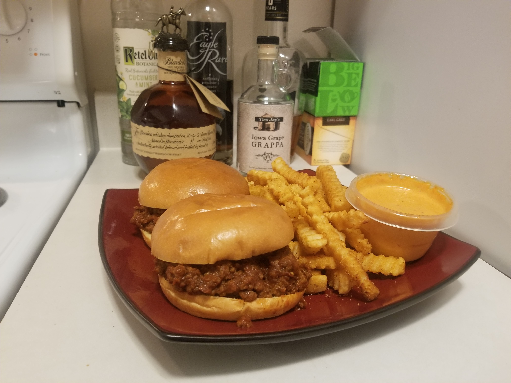

Savory and Spicy Homemade Sloppy Joes

Description
Sloppy Joes were always a personal favorite of mine partly because they are so versatile. Not
only can you just eat them as a cheap, filling meal, you can use the leftover meat for nachos, baked potatoes,
as a filling for puff pastries, a casserole, the list goes on. Feeling tired of traditional sloppy joes?
Substitute soy sauce for worcestershire and add some ground ginger and Chinese five spice to give it an Asian zing! This
is a very difficult recipe to mess up so it's perfect if you don't have a lot of cooking experience and just want a quick, 30 minute
meal using some ground beef and some ingredients laying around your pantry. This recipe will just be for sandwiches though but
feel free to get creative!
Ingredients
- One pound of ground beef
85/15 is fine but you don't want any more fat then that. It will all be drained out anyway.
- One small onion
- One small green pepper
- Two jalapeno peppers
The jalapeno is optional. Depending on how spicy you would like it to be you can omit this or substitute for a hotter pepper.
- One cup of ketchup
- A quarter cup of yellow mustard
- A quarter cup of barbecue sauce
- Two tablespoons of hot sauce
Tabasco is fine but I prefer sriracha.
- One tablespoon of worcestershire sauce
- A third of a cup of light brown sugar
- One tablespoon of salt
- Two teaspoons of black pepper
- Two teaspoons of granulated garlic
- One teaspoon of paprika
- One teaspoon of crushed red pepper
- Your favorite burger buns
I like to use brioche, but sesame seed is a good choice also.
Directions
- Preheat oven to a low temperature. For most ovens it will be 160-200 degrees.
- Dice the onion, green pepper, and jalapeno in a medium small dice. A half inch or less. Set aside.
- In a medium saucepan brown the ground beef on medium high heat.
- Reduce heat to medium and add the vegetables. Cook for a few minutes until the onions become translucent.
- Drain all of the fat from the pan and discard.
- On low heat add all the spices except the brown sugar and stir until the beef is coated.
- Add the ketchup, mustard, barbecue sauce, hot sauce, worcestershire, and brown sugar and stir until completely mixed.
- Let the ground beef and sauce simmer on low heat for 10-15 minutes, the sauce should thicken somewhat.
- While the beef and sauce is simmering take a sheet of aluminum foil and loosely wrap your burger buns. Place them in the oven for about 5 minutes to warm up.
- You are ready to serve. You may top with cheese or bacon for added flavor. Enjoy!
Back Home